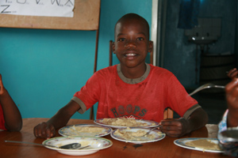
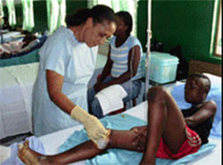
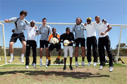

|
Donnerstag, 25. Februar 2010 |
Red Hand Day 2010:
terre des hommes-Kinderrechtsteam "Nojoud" aus Muggensturm überreicht Westerwelle 164 "rote Hände" |
Sie sind mutig wie ihre Freundin „Nojoud“ aus dem gleichnamigen Buch und sie wollen mehr Gerechtigkeit für die Kinder auf dieser Welt. Das Kinderrechtsteam „Nojoud“, das sich im vergangenen Jahr in Rastatt und Muggensturm gegründet hat, sammelte bei verschiedenen Aktionen am Rastatter Tulla-Gymnasium und beim terre des hommes Kinderfest in Kuppenheim 164 „rote Hände“. Entschlossen übergaben die jungen Kinderrechtler am diesjährigen „Red Hand Day“ in Berlin ihre gesammelten Hände an Außenminister Guido Westerwelle.
Im Rahmen des internationalen „Red Hand Day 2010“, der seit dem Jahre 2002 jährlich am 12. Februar stattfindet und weltweit auf die Situation von Kindersoldaten aufmerksam macht, empfing Westerwelle Vertreter des Deutschen Bündnisses Kindersoldaten. In diesem Bündnis haben sich elf Organisationen, unter anderem terre des hommes Deutschland zusammengeschlossen. Während des Empfangs hat das Bündnis seine Forderung an die Bundesregierung unterstrichen, sich stärker im Kampf gegen einen Einsatz von Kindersoldaten zu engagieren. Mehr als 320.000 Abdrücke rot gefärbter Hände mit Unterschriften wurden in den vergangenen Jahren weltweit gesammelt und jährlich an die verantwortlichen Politiker übergeben.
„Es wird geschätzt, dass weltweit 250.000 Kinder als Soldaten eingesetzt werden, dagegen muss man etwas tun“, bemerkte Sophie Uhing, die das Kinderrechtsteam „Nojoud“ gemeinsam mit ihren Freundinnen Kathrin, Charlotte, Julika, Marie-Lena und Gina in Berlin vertrat, stellvertretend für terre des hommes Deutschland. Begleitet wurden sie auf ihrer Fahrt in die Bundeshauptstadt von zwei Vätern und von Ana Jacinto von terre des hommes. „Jede Hand zählt“, bemerkte Sophie bei der Übergabe der gesammelten Handabdrücke an Westerwelle, der selbst seine mit roter Fingerfarbe eingefärbten Hände auf Papier drückte und eine Botschaft schrieb.
„Auch in Deutschland leben geflüchtete ehemalige Kindersoldaten“, erklärte Sophie, die entschlossen ist, weiter auf dieses Thema aufmerksam zu machen und Kinder sowie Erwachsene darüber zu informieren. Wer sich der Kinderrechtsgruppe „Nojoud“ anschließen möchte, kann Sophie unter sophie.uhing@gmx.de eine Email schreiben.
Zur Pressemitteilung von tdh Deutschland inkl. weiteren Informationen: Bündnis Kindersoldaten fordert Einsatz der Bundesregierung
|
Dienstag, 23. Februar 2010 |
Rotenfelser Narren setzen Zeichen
1.666 Euro Spende für Kinder in Haiti |
Eine außergewöhnliche Aktion hatte die Narrengemeinschaft in Bad Rotenfels zu Beginn der Fasnachtszeit gestartet. „Wir wollten ein Zeichen setzen und an die Menschen denken, die in diesen Tagen nicht so ausgelassen feiern können", so Christian Ohlott von den Klaubube.
Die verkauften bei ihrem „Rotenfelser Abend" zum Jubiläum in der Festhalle unter anderem von den örtlichen Brennereien gestifteten Schnaps für die gute Sache. 500 Euro waren auf diese Weise zusammen gekommen. Die insgesamt sieben Vereine und Gruppen aus „Brotsack-City" hatten zudem Geld in den eigenen Reihen gesammelt.
Die närrische Summe von 1666 Euro konnten die Rotenfelser Narren in dieser Woche am Rande der Rentnerfasnacht von St. Laurentius nun an „terre des hommes" übergeben.
Das Geld ist für die derzeit Not leidenden Kinder im Erbebengebiet von Haiti gedacht. „Mit dieser Spende kann man rund 300 Kindern sofort helfen und ihnen eine Perspektive bieten", so Heinz Wolf und Renate Baier von der regionalen Arbeitsgruppe der engagierten Kinderhilfsorganisation. Insgesamt hat die Murgtal-Gruppe bislang nun rund 10.000 Euro für die Ärmsten der Armen in Haiti zur Verfügung stellen können.
Seit 20 Jahren kümmert sich „terre des hommes" in dem Land um die Not der Menschen, knapp 60 Mitarbeiter - unter anderem Krankenschwestern und Gesundheitshelfer- sind derzeit im Einsatz. „Ziel ist die sofortige Hilfe und ein nachhaltiger Aufbau", so Wolf. Er dankte den Rotenfelser Narren für diese „herausragende Idee".
Beteiligt waren an dieser von Narrensprecher Thomas Riedinger koordinierten Hilfsaktion:
|
Donnerstag, 18. Februar 2010 |
Fünf Jahre nach dem Tsunami - Wiederaufbau erfordert langen Atem |
Zum fünften Jahrestag des verheerenden Tsunami in Asien erinnert terre des hommes Murgtal / Mittelbaden an die Spendenaktion für die Flutopfer, bei der binnen eines Monats mehr als 50.000 € von etwa 400 Einzelspendern zusammenkamen, wobei die Volksbank Rastatt Baden-Baden mit 5.000 € die entscheidende Starthilfe gab. „Nicht nur die vielen größeren und kleineren Geldspenden machten den Verantwortlichen Mut, sondern auch die Unterstützung von Vereinen und Organisationen“, so Heinz Wolf, Sprecher der regionalen Arbeitsgruppe.
Insgesamt konnte terre des hommes Deutschland zwölf Millionen Euro für den Wiederaufbau zur Verfügung stellen. Der Schwerpunkt der Hilfe lag vor allem auf den Krisengebieten in Indien und in der indonesischen Provinz Aceh. Der Tsunami zerstörte zwar die Existenz vieler Menschen, doch zeigte die Katastrophe auch, was die weltweite Hilfsbereitschaft zu leisten vermag: Fünf Jahre nach der Flutwelle ist die Infrastruktur in vielen Regionen besser als vor dem Tsunami. Neben dem Bau von Häusern und Straßen ist auch viel in den Ausbau medizinischer Einrichtungen und Trinkwasserleitungen investiert worden. Profitiert haben auch viele Kinder, die nun zum Beispiel regelmäßig zur Schule gehen könnten.
Obwohl der Wiederaufbau in den Regionen weitestgehend abgeschlossen ist, arbeitet die Kinderhilfsorganisation weiterhin vor Ort. Unterstützt werden unter anderem Programme für Kinder, die noch immer unter dem Trauma der Katastrophe leiden. Außerdem engagiert sich die Organisation mit Dorfentwicklungsprogrammen sowie Präventionsmaßnahmen zum Küsten- und Katastrophenschutz. Heute können wieder viele Familien vom Fischfang leben. Dies ist ein Beweis dafür, wie wichtig die Verknüpfung von Soforthilfemaßnahmen und langfristiger Entwicklungsarbeit ist.
In anderen Regionen hätten Dörfer aus Sicherheitsgründen an anderer Stelle neu errichtet werden müssen. Auch hier habe terre des hommes den Menschen beim Aufbau einer neuen Existenz geholfen. Noch immer betreue man Kinder, die unter den psychischen Folgen der Katastrophe leiden würden.
Nach Auffassung von terre des hommes mache das Engagement deutlich, terre des hommes entsendet grundsätzlich keine eigenen Helfer in Krisenregionen, sondern stützt sich ausschließlich auf einheimische Partner, die die regionalen Bedingungen kennen und das Vertrauen der Bevölkerung genießen würden. terre des hommes befürchtet, dass sich Katastrophen mit weit größeren Folgen aufgrund der Klimaveränderungen in den kommenden Jahrzehnten häufen könnten.
Hierauf seien die Hilfswerke und die internationale Gemeinschaft nicht vorbereitet. Gefordert sei hier die Politik, die es aber auf dem jüngsten Weltklimagipfel versäumt habe, bindende Entscheidungen gegen die Erderwärmung zu treffen.
Weitere Informationen:
|
Mittwoch, 17. Februar 2010 |
Weltweit fehlen 21 Milliarden Dollar an versprochener Entwicklungshilfe
Welthungerhilfe und terre des hommes kritisieren deutschen Wortbruch |
Nach den heute in Paris von der OECD vorgestellten Schätzungen für die Entwicklungshilfeleistungen fehlen 2010 weltweit ca. 21 Milliarden Dollar gegenüber den Verpflichtungen der EU und den Zusagen auf dem G8-Gipfel in Gleneagles 2005. Deutschland gehört mit anderen Ländern wie Italien und dem krisengeschüttelten Griechenland zu den Wortbrechern. Der Anteil der deutschen Entwicklungshilfe am Bruttonationaleinkommen (BNE) wird statt der zugesagten 0,51 Prozent 2010 voraussichtlich nur bei 0,4 Prozent liegen.
Welthungerhilfe und terre des hommes sehen sich in ihrer im Bericht "Die Wirklichkeit der Entwicklungshilfe" formulierten Kritik bestätigt, dass Deutschland zwar in seinem Haushaltsentwurf für 2010 geringfügige Steigerungen vorsieht, aber seinen Verpflichtungen aus den Vorjahren nicht nachkommt. "Alleine zur Deckung der deutschen Verpflichtungen aus dem ODA-Stufenplan der EU sind 2010 und in den Folgejahren jeweils etwa 1,7 Milliarden Euro zusätzlich nötig. Es ist ein skandalöser Wortbruch, dass Deutschland nach den heutigen Schätzungen der OECD sein Versprechen, 2010 0,51 Prozent des BNE für Entwicklung aufzuwenden, nicht erfüllen wird", so die Entwicklungsorganisationen.
Gerade angesichts der anstehenden Herausforderungen durch die globalen Finanz-, Klima- und Ernährungskrisen ist es umso wichtiger, dass die Regierungen ihre Versprechen endlich umsetzen. Deutschland sollte als führende Wirtschaftskraft in Europe mit gutem Beispiel vorangehen. Sonst macht es sich international unglaubwürdig. Deutschland lag, gemessen an seiner Wirtschaftskraft und bezogen auf den Anteil der Entwicklungshilfe am BNE, 2008 mit 0,38 Prozent nur auf Rang 14 der OECD-Geber.
Weitere Informationen:
|
Mittwoch, 17. Februar 2010 |
terre des hommes-Appell anlässlich dramatischer Auswirkungen der Finanz- und Wirtschaftskrise auf Kinder in den Ländern des Südens
Schutzschirm für Kinder aufspannen! |
|
Foto: C. Kovermann / terre des hommes |
Die Bundesregierung darf angesichts des Versagens des bisherigen Wirtschafts- und Finanzsystems den Kernbereich sozialer Entwicklung nicht vernachlässigen. Programme zur Förderung von Grundbildung, Basisgesundheitsversorgung und Geschlechtergerechtigkeit müssten gerade jetzt ausgebaut und gestärkt werden. Das erklärte das internationale Kinderhilfswerk terre des hommes auf einer Pressekonferenz am Mittwoch in Berlin. Angesichts der dramatischen Auswirkungen der Finanz- und Wirtschaftskrise auf viele geförderte Projekte und damit die betroffenen Kinder in zahlreichen Ländern des Südens sei ein Umsteuern dringend erforderlich.
"Was für Banken und 'systemrelevante' Einrichtungen in den Ländern, deren Politik die Finanz- und Wirtschaftskrise verursacht hat, möglich ist, muss auch hier möglich sein: ein Schutzschirm für Kinder", sagte Ursula Pattberg, Vorsitzende von terre des hommes. terre des hommes werde sich zudem auf politischer Ebene verstärkt für eine Diskussion über Alternativen gerechter und selbstbestimmter Entwicklung einsetzen.
Professor Lothar Krappmann, Mitglied des Ausschusses der Vereinten Nationen für die Rechte des Kindes in Genf, betonte, die Welt sehe zwar die Gefahr des Einsturzes der Finanzarchitektur, verkenne aber die katastrophalen Folgen der Bildungs- und Armutskrise für Millionen Kinder und Jugendliche. "Es geht nicht um Schönheitsmaßnahmen, sondern um einen fundamentalen Finanzbedarf, der leicht ebenso viele Mittel umfassen könnte wie die bisher zur Rettung unseres Finanzsystems aufgebrachten Hunderte Milliarden", so Krappmann.
Wolfgang Heller, Direktor der Internationalen Arbeitsorganisation (ILO) Deutschland in Berlin, schätzte, dass die Krise in rund 40 Prozent aller Entwicklungsländer die Armut verschärft habe. Besonders gefährdete Länder seien zum Beispiel Kambodscha, Mali, die Mongolei und Sambia. Untersuchungen der ILO kämen zu dem Ergebnis, dass die Zahl arbeitender Kinder allein in Lateinamerika aufgrund der Krise um bis zu eine halbe Million ansteigen könne. Die ILO empfehle deshalb, verstärkt Programme aufzulegen, mit denen Schulbildung für Kinder, aber auch sozialer Schutz für arme Familien und insbesondere der Zugang zu Mikrokrediten ermöglicht werde.
Weitere Informationen:
|
Samstag, 13. Februar 2010 |
Spende der Grundschule Hörden:
Für die Kinder in Haiti |
 |
| 1.840 Euro übergaben Schüler, Lehrer und Elternvertreter der Grundschule Hörden zum Abschluss ihres "Haiti-Projekts" an terre des hommes Murgtal / Mittelbaden. |
„Die Idee des Haiti-Projektes entstand kurz nach dem Erdbeben im Rahmen des Religionsunterrichts unserer vierten Klasse. Aufgrund des besonderen Engagements aller Beteiligten haben wir es geschafft, innerhalb weniger Tage aus einer Idee ein großartiges Gemeinschaftserlebnis umzusetzen, um den Menschen und vor allem den Kindern im Erdbebengebiet gezielt helfen zu können", so die Schulleiterin der Grundschule Horden, Siegrid Rahner.
Der Erlös aus dem Flohmarkt „Grundschulkinder helfen Erdbebenkindern" wurde jetzt an die Arbeitsgruppe terre des hommes Murgtal / Mittelbaden übergeben. Insgesamt wurden im Rahmen der Spendenaktion 1.840 Euro gesammelt, die sich aus den Einnahmen des Flohmarktes, der Cafeteria sowie aus Spenden zusammensetzen.
Der Sprecher der Arbeitsgruppe, Heinz Wolf, gab im Rahmen der offiziellen Scheckübergabe in den Räumlichkeiten der Grundschule Hörden einen detaillierten Überblick über die Verwendung der Spendengelder. In enger Kooperation mit der Schweizer Geschäftsstelle „terre des hommes" werden die Hilfsgüter von derzeit 57 Betreuern direkt in die betroffenen Gebiete rund um Porto Praz gebracht, um auf diesem Weg die Situation der Kinder vor Ort zu verbessern. (Zu unseren Sonderseiten HAITI)
„Gerade in Katastrophen-Situationen ist eine schnelle und effektive Hilfe von großer Bedeutung. Hierbei spielt neben der Versorgung mit Hilfsgütern auch die psychologische Betreuung der Betroffenen eine sehr entscheidende Rolle", so Wolf. „Die Arbeitsgruppe Murgtal / Mittelbaden ist eine von 130 terre des hommes-Arbeitsgruppen innerhalb Deutschlands, die sich mit großem Engagement für weltweite Hilfsprojekte einsetzt."
„Es war eine schöne Erfahrung, wie viele Menschen sich an unserem Projekt beteiligt haben. Neben den Kindern, die mit sehr viel Liebe, aber auch Betroffenheit mithalfen, erfuhren wir auch sehr viel Mithilfe in Form von Spenden, Kuchen oder ähnlichem aus dem Umfeld", freute sich die Leiterin der Grundschule. Ein Dankeschön richtete sie an alle Kinder, Eltern, Helfern und Gäste, die zum Gelingen der Aktion beitrugen.
Text+Foto: Verena Kocher
|
Freitag. 12. Februar 2010 |
Bündnis für Straßenkinder in Deutschland
Ex-Boxweltmeisterin Regina Halmich als Botschafterin des Bündnisses |
|
Regina Halmich boxt für Straßenkinder in Deutschland (Foto: Marianne Müller) |
Das Kinderhilfswerk terre des hommes hat gemeinsam mit mehr als 20 weiteren Organisationen das bundesweite »Bündnis für Straßenkinder in Deutschland« ins Leben gerufen. Das Bündnis soll den fachlichen Austausch zwischen allen Initiativen, die in Deutschland Straßenkinder betreuen, fördern und dabei helfen, die Projektarbeit zu verbessern. Die bundesweite Vernetzung will aber auch darauf aufmerksam machen, dass das Problem nach wie vor aktuell ist.
Davon zeugt die unverändert hohe Zahl der Straßenkinder in Deutschland. Das Bündnis geht von etwa 9.000 Jugendlichen und jungen Erwachsenen aus, die Obdachlosigkeit leben oder von dieser bedroht sind. Die nach wie vor hohe Zahl der Straßenkinder liege unter anderem daran, dass die Politik die lokalen Projekte zu wenig unterstütze. Doch auch die föderalen Strukturen Deutschlands erschweren eine erfolgreiche Arbeit: Da es in der Zuständigkeit von Ländern und Kommunen liegt, sich um obdachlose Jugendliche zu kümmern und eine Betreuung sicherzustellen, gibt es keine Lösungsansätze auf bundesweiter Ebene. Bei einer sehr mobilen Zielgruppe, die oft innerhalb kurzer Zeit ihren Aufenthaltsort wechsle, sei eine längerfristige Betreuung so nur schwer möglich. Deswegen seien die Koordination der Arbeit und der fachliche Austausch auf Bundesebene dringend notwendig.
Unterstützt wird das Bündnis von der erfolgreichsten Boxerin aller Zeiten, Regina Halmich. Geplant ist, dass Regina Halmich Projekte des Bündnisses besucht und mit den Jugendlichen sogar Trainingseinheiten absolviert. Die hohe Glaubwürdigkeit Regina Halmichs gerade bei jungen Menschen soll genutzt werden, um diesen zu vermitteln, dass Einsatzwille und der Glaube an sich selbst hilft, nicht in der Resignation zu versinken.
Weitere Informationen:
|
Freitag. 12. Februar 2010 |
Kindersoldaten-Tag 2010
Bündnis Kindersoldaten fordert Einsatz der Bundesregierung |
Das Deutsche Bündnis Kindersoldaten fordert die Bundesregierung auf, sich im Kampf gegen den Einsatz von Kindersoldaten stärker zu engagieren. »Deutschland sollte seinen Einfluss auf Kongo, Burma und Pakistan nutzen, damit auch diese Staaten das Zusatzprotokoll zum Schutz von Kindern in bewaffneten Konflikten ratifizieren«, so Barbara Dünnweller von der Kindernothilfe. Bislang haben 131 Staaten das Zusatzprotokoll zur UN-Kinderrechtskonvention ratifiziert, 61 Staaten noch nicht. In diesem Jahr empfängt Außenminister Guido Westerwelle Vertreter des Bündnisses Kindersoldaten und Jugendliche im Auswärtigen Amt.
Schätzungsweise 250.000 Kinder in mindestens 14 Ländern werden aktuell als Soldaten missbraucht. »Häufig sind das nichtstaatliche bewaffnete Gruppen wie etwa in Kolumbien. Aber auch die Regierungsarmeen in Burma und Sudan haben Kinder unter Waffen«, so Danuta Sacher, Geschäftsführerin von terre des hommes.
Das Zusatzprotokoll nimmt Staaten auch nach der Beendigung eines Konfliktes in die Pflicht, etwa mit Reintegrationsmaßnahmen für ehemalige Kindersoldaten und Strafverfolgung für die Verantwortlichen. »In Sri Lanka brauchen Hunderte ehemaliger Kindersoldaten in den Regierungslagern jetzt professionelle Hilfe. Doch die Regierung in Colombo lässt das nicht zu«, so Dünnweller. Der UN-Sondergesandte Patrick Cammaert kritisierte kürzlich, dass diese Kinder »immer noch von ihren Eltern getrennt leben müssen.«
Auch in Deutschland leben geflüchtete ehemalige Kindersoldaten. »Sie brauchen Sicherheit und ein jugendgerechtes Umfeld und dürfen nicht den Belastungen der Verfahren für erwachsene Asylbewerber ausgesetzt werden«, so Danuta Sacher. Der »Red Hand Day« am 12. Februar erinnert an das Inkrafttreten des »Zusatzprotokoll Kindersoldaten« am 12. Februar 2002. Dieser Tag ist seitdem der weltweite Aktionstag gegen den Einsatz von Kindern als Soldaten.
Im Deutschen Bündnis Kindersoldaten haben sich elf Organisationen zusammengeschlossen: Aktion Weißes Friedensband, Amnesty International, Deutsches Jugendrotkreuz, Kindernothilfe, Lutherischer Weltbund, missio, Netzwerk Afrika Deutschland, Plan International, terre des hommes, UNICEF Deutschland, World Vision.
Weitere Informationen:
|
Dienstag. 09. Februar 2010 |
Planspiel Börse
Schülerinnen und Schüler überreichen Spende an terre des hommes |
Schülerinnen und Schüler der Handelslehranstalt Gernsbach und der GHS Forbach überreichten der Mitarbeiterin von terre des hommes Murgtal/Mittelbaden, Barbara Wachsmuth, einen Scheck in Höhe von 350,00 € für die Haiti-Hilfe.
Im Planspiel Börse, dem Wirtschaftspiel der Sparkassen, hatten die Schülerinnen erfolgreich teilgenommen und beschlossen, ihre von der Sparkasse Rastatt-Gernsbach erhaltenen Siegerprämien terre des hommes für die Erdbebenopfer in Haiti zur Verfügung zu stellen. Die Sparkasse Rastatt-Gernsbach verdoppelte den Betrag und so konnten für die Erdbebenhilfe in Haiti 350,00 € überreicht werden, über die sich Frau Wachsmuth sehr freute und herzlich bedankte.
Dies sei ein Beispiel dafür, wie in der Schule wirtschaftliche Themen mit sozialen korrespondieren, sagte Rektor Blum. Es sei den Schulen wichtig, ihren Schülern sowohl Grundkenntnisse im Wirtschaftsleben (dem Planspiel Börse der Sparkasse komme hier ein wichtiger Part zu), als auch Sozialkompetenz zu vermitteln. „ Diese Spende ist eine super Idee der Schülerinnen und Schüler", bemerkte Teilmarktleiter der Sparkasse in Gernsbach, Simon Fritz, und er hoffe auf eine neue, erfolgreiche Teilnahme aller Schülerinnen im Börsenspiel Börse 2010.
Foto: (von links nach rechts): Stephan Blum (Rektor HLA Gernsbach), Markus Nagel (Geschäftsstellenleiter der Sparkasse in Forbach), Helge Rieger ( Lehrer GHS Forbach), Simon Fritz ( Sparkassen-Teilmarktleiter in Gernsbach), Martin Strauß (Lehrer HLA Gernsbach), sowie Schülerinnen und Schüler der HLA Gernsbach und GHS Forbach überreichen Spendenscheck an Barbara Wachsmuth (terre des hommes Murgtal/Mittelbaden) |
Donnerstag. 04. Februar 2010 |
"Klezmers Techter" in der Reithalle Rastatt - Verklärte Traummelodien und Hochzeitsstimmung
Veranstaltung ein voller Erfolg für terre des hommes Murgtal/Mittelbaden |
Für über zwei Stunden wurde der Theatersaal der Reithalle, die bis auf letzten Platz gefüllt war, zur Stätte für ein Musikerlebnis der besonderen Art. In stilvoller Atmosphäre präsentierten Sabine Döll (Flöte, Kontrabass), Gabriele Kaufmann (Klarinette, Saxophon) und der Gast im Ensemble, Almut Schwab (Akkordeon), als "Klezmers Techter" die traditionelle Musik jüdischer Wandermusikanten in Osteuropa, gepaart mit zeitgenössischen Elementen.
Eingebunden war das Musikerlebnis in die Aktion der Sektion von "terre des hommes", Murgtal/Mittelbaden, zur Hilfe für Kinder in Dafur (Sudan) und aktuell, Erdbebenopfern in Haiti. Während Bürgermeister Arne Pfirrmann die wichtige und wertvolle Arbeit für Kinder in Not würdigte, sprach Wolfgang Deppisch für die Gruppe aufrüttelnde Worte zur Notwendigkeit der Arbeit von "terre des hommes" weltweit.
Zum Pressebericht inkl. Sponsoren |
Zurück ins Leben mit dem Stiftungsfonds »Hilfe für traumatisierte Kinder« |
Krieg, Gewalt, Armut und Ausbeutung führen dazu, dass Kinder traumatisiert werden. Die Gemeinschafsstiftung terre des hommes möchte diesen Kindern nachhaltig helfen und baut dazu den Stiftungsfonds »Hilfe für traumatisierte Kinder« auf. Bis Ende 2010 will sie eine Million Euro für den Fonds einwerben, aus dessen Erträgen langfristig Projekte finanziert werden können.
terre des hommes möchte Ihnen die Möglichkeit bieten, die Förderung von Projekten für Kinder langfristig zu sichern. Deshalb hat terre des hommes die »Gemeinschaftsstiftung terre des hommes - Hilfe für Kinder in Not« gegründet. Sie legt Kapital an, dessen Erträge direkt in die Projektarbeit für benachteiligte Jungen und Mädchen fließen. Ihr Beitrag macht diese zukunftsfähige Form der Hilfe möglich.
Weitere Informationen:
|
Haiti: Aktuelle Berichte und Meldungen |
Ab sofort finden Sie alle Berichte und Meldungen zu HAITI auf einer eigenen Sonderseite.
Zur Sonderseite HAITI
Bitte unterstützen Sie uns weiterhin mit Spenden.
Ihre Spende - Stichwort: "Erdbeben Haiti"
Alle Spenden reichen wir weiter an die Partnerorganisation tdh Lausanne, die vor Ort Hilfe leistet.
Spendenkonto 120 790
Sparkasse Baden-Baden / Gaggenau
BLZ 662 500 30
Spendenkonto 102 748 00
VoBa Baden-Baden / Rastatt
BLZ 662 900 00
terre des hommes ist Mitglied im "Bündnis Entwicklung Hilft", einem Zusammenschluss deutscher Hilfswerke für akute Nothilfe und langfristige Entwicklungszusammenarbeit. |
Dienstag, 19. Januar 2010 |
Haiti: Arbeitsgruppe Murgtal / Mittelbaden unterstützt Partnerorganisation in Lausanne |
 Nach dem Jahrhundertbeben, das am 13. Januar eines der ärmsten Länder der Welt heimgesucht hat und von den Vereinten Nationen als die schlimmste Katastrophe ihrer Geschichte bezeichnet wird, stellte die Kinderhilfsorganisation Terre des hommes unverzüglich mehrere Tausend Euro zur Verfügung. Die tdh-Arbeitsgruppe Murgtal/Mittelbaden unterstützt die Schweizer Partnerorganisation tdh Lausanne, die in Haiti seit nunmehr 20 Jahren aktiv Hilfe leistet und unmittelbar nach der Katastrophe im Einsatz war und weiterhin dort ist. Nach dem Jahrhundertbeben, das am 13. Januar eines der ärmsten Länder der Welt heimgesucht hat und von den Vereinten Nationen als die schlimmste Katastrophe ihrer Geschichte bezeichnet wird, stellte die Kinderhilfsorganisation Terre des hommes unverzüglich mehrere Tausend Euro zur Verfügung. Die tdh-Arbeitsgruppe Murgtal/Mittelbaden unterstützt die Schweizer Partnerorganisation tdh Lausanne, die in Haiti seit nunmehr 20 Jahren aktiv Hilfe leistet und unmittelbar nach der Katastrophe im Einsatz war und weiterhin dort ist.
Seit Jahren engagiert sich tdh Lausanne in Haiti in einem Gesundheits- und Ernährungsprojekt. In den 70er Jahren kümmerte sich Tdh um schwer kranke Kinder, die zur Behandlung in die Schweiz überführt werden mussten. In Les Cayes – westlich des Epizentrums - gründete die Organisation im Jahr 1995 ein Zentrum für die Behandlung mangelernährter Kinder (Centre de récupération nutritionnelle CREN), in das nun Hunderte von Verletzten aus Port-au-Prince strömen. Berichtet wird von Schäden, die selbst in diesem vom Epizentrum des Erdbebens weit entfernten Gebiet größer als befürchtet sind. Wie die Bevölkerung Haitis steht auch das tdh-Team nach dieser Katastrophe unter Schock und ist äußerst betroffen. Alle Nachrichten, die von in Port-au-Prince lebenden Angehörigen eintreffen, sind dramatisch.
 Dank ihrer langjährigen Erfahrung und Kenntnisse der lokalen Bevölkerung können die 57 Mitglieder der tdh Delegation in Les Cayes (Krankenschwestern, Gesundheitshelfer) schon jetzt die anwesenden medizinischen Expertenteams verstärken, indem sie Verletzte pflegen, die in dieses Krankenhaus eingeliefert wurden. Am vergangenen Samstag traf ein Notfallteam bestehend aus Spezialisten ein, die die Bedürfnisse der Opfer in den Vororten von Port-au-Prince analysieren, um eine konkrete Aktion vorbereiten zu können. In der jetzigen Phase werden die dringlichsten Bedürfnisse evaluiert, aber auch welche Form der Unterstützung tdh am besten leisten kann. Die Stiftung plant zusätzlich einen langfristigen Einsatz, der zweifellos im Bereich Wasser und Siedlungshygiene sowie der psychosozialen Unterstützung erfolgen wird. Dank ihrer langjährigen Erfahrung und Kenntnisse der lokalen Bevölkerung können die 57 Mitglieder der tdh Delegation in Les Cayes (Krankenschwestern, Gesundheitshelfer) schon jetzt die anwesenden medizinischen Expertenteams verstärken, indem sie Verletzte pflegen, die in dieses Krankenhaus eingeliefert wurden. Am vergangenen Samstag traf ein Notfallteam bestehend aus Spezialisten ein, die die Bedürfnisse der Opfer in den Vororten von Port-au-Prince analysieren, um eine konkrete Aktion vorbereiten zu können. In der jetzigen Phase werden die dringlichsten Bedürfnisse evaluiert, aber auch welche Form der Unterstützung tdh am besten leisten kann. Die Stiftung plant zusätzlich einen langfristigen Einsatz, der zweifellos im Bereich Wasser und Siedlungshygiene sowie der psychosozialen Unterstützung erfolgen wird.
Die tdh-Arbeitsgruppe Murgtal/Mittelbaden, die bei der Tsunami-Katastrophe vor fünf Jahren binnen wenigen Wochen mehr als 50.000 Euro zusammentragen und nachhaltig Hilfe leisten konnte, gibt die Spenden nun an die Schweizer Partner-Organisation tdh Lausanne weiter.
Ihre Spende - Stichwort: "Erdbeben Haiti"
Alle Spenden reichen wir weiter an die Partnerorganisation tdh Lausanne, die vor Ort Hilfe leistet.
Spendenkonto 120 790
Sparkasse Baden-Baden / Gaggenau
BLZ 662 500 30
Spendenkonto 102 748 00
VoBa Baden-Baden / Rastatt
BLZ 662 900 00
terre des hommes ist Mitglied im "Bündnis Entwicklung Hilft", einem Zusammenschluss deutscher Hilfswerke für akute Nothilfe und langfristige Entwicklungszusammenarbeit. |
Dienstag. 05. Januar 2010 |
Fußballprofis des VfL Wolfsburg trainieren südafrikanische Kinder |
Mehr als 160 Jungen und Mädchen aus verschiedenen Townships der südafrikanischen Hafenstadt Port Elizabeth nahmen am Dienstagnachmittag an einer Trainingseinheit mit dem amtierenden Deutschen Fußballmeister VfL Wolfsburg teil. Das Team war zwei Tage zuvor zu einem Vorbereitungstraining auf die neue Saison ins Land am Kap gekommen.
Verstärkung beim Kicken mit den Kindern erhielten die »Wölfe« von den beiden südafrikanischen Vereinen Moroka Swallows und Bay United, die von Volkswagen Südafrika gesponsert werden.
Mit dieser Initiative unterstützten die Spieler das Programm »A chance to play«, das 2008 vom Volkswagen-Konzernbetriebsrat mit Blick auf die Fußballweltmeisterschaft ins Leben gerufen und durch Spenden der Belegschaften der Volkswagen-Gruppe ermöglicht wurde.
»A chance to play« wird in Kooperation mit dem Kinderhilfswerk terre des hommes Deutschland sowie neun südafrikanischen Organisationen in drei Provinzen des Landes umgesetzt. Ziel ist es, Spiel- und Sportmöglichkeiten für Kinder zu verbessern, die in Armut leben, und dies mit zusätzlichen Lernangeboten zu verbinden. Bislang konnten mehr als 30.000 Jungen und Mädchen mit den vielfältigen Angeboten erreicht werden.
»Wir freuen uns, dass sich der VfL Zeit genommen hat, im Anschluss an seinen Trainingsplan auch unser Projekt zu unterstützen«, erklärte Jürgen Stumpf, Mitglied des Volkswagen-Weltkonzernbetriebsrats und des Aufsichtsrates der Volkswagen AG, der vor Ort dabei war. »Toll ist auch, dass mit den beiden einheimischen Vereinen zusammen gearbeitet wird, das macht es zu einem einmaligen deutsch-südafrikanischen Fußballereignis für die Kinder.«
Projektkoordinatorin Claudia Berker (terre des hommes Deutschland) betonte: »Bei A chance to play geht es immer darum, dass Kinder die Möglichkeit und ein Umfeld erhalten, ihre Talente zu zeigen und weiterzuentwickeln. Das Training mit den Fußballprofis ist eine weitere wunderbare Gelegenheit, dies zu tun.«
Auch Armin Veh, Trainer des VfL Wolfsburg unterstrich das Engagement seines Vereins: »Es war ein Ansporn für uns, nicht nur zu unseren eigenen Trainingszwecken nach Südafrika zu kommen, sondern diesen Aufenthalt auch zu nutzen, um sozial benachteiligten Jungen und Mädchen etwas von unserem Fußball-Know-how mitzugeben.«
Der VfL Wolfsburg kommt mit einem starken Aufgebot nach Südafrika: Derzeit spielen 15 VfL-Kicker in ihren jeweiligen nationalen Auswahlteams.
Weitere Informationen:
|
|
|
|
 Ansprechpartner Ansprechpartner
|
|
Wolfgang Deppisch
(Projektinfos)
Tel. 07222 / 32927
Heinz Wolf
(Sponsoring, Allgemeines)
Tel. 07225 / 75543
weitere Ansprechpartner
|
|
Erlöse
1992-2012
|
|

Jahr |
Euro |
1992 |
70.000 |
1993 |
75.600 |
1994 |
83.883 |
1995 |
69.617 |
1996 |
51.412 |
1997 |
61.749 |
1998 |
60.333 |
1999 |
68.742 |
2000 |
85.492 |
2001 |
106.375 |
2002 |
78.937 |
2003 |
84.027 |
2004 |
76.662 |
2005 |
149.941 |
2006 |
84.497 |
2007 |
105.958 |
2008 |
104.053 |
2009 |
100.833 |
2010 |
107.254 |
2011 |
103.600 |
| 2012 |
158.250 |
| 2013 |
163.420 |
1977-2013 |
mehr als 2,7 Mio. € |
|
Detailansicht der Erlöszahlen |
|
|


;)
;)
;)
;)
;)
;)